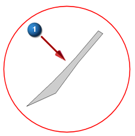
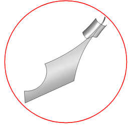
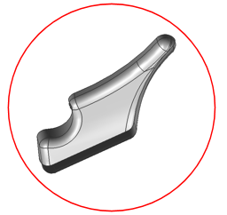
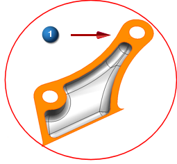

Display adjacent surfaces
Using the thin surface as a starting point, select a group of surfaces to work with.
Show Adjacent (Utilities group)
-


-

-
Apply
-

-
The thin surface from the previous step is the seed surface to use as the starting point to which adjacent surfaces are added.
-
Continue to select seed surfaces and click Apply until you end up with a set of surfaces like those shown below.
-

-
Tip
You can select more than one seed surface for the Show Adjacent command. The command shows all adjacent surfaces for those that are selected.
Tip
Undo (Quick Access toolbar) goes back one selection. Reset (Polygon Geometry group) lets you start over.
-
Note
If you have an extra surface around the top edge of the preceding image, click Cancel in the Show Adjacent dialog box. Right-click the extra surface and choose Hide.

-
When all desired surfaces are displayed:
Cancel
Show Adjacent dialog box